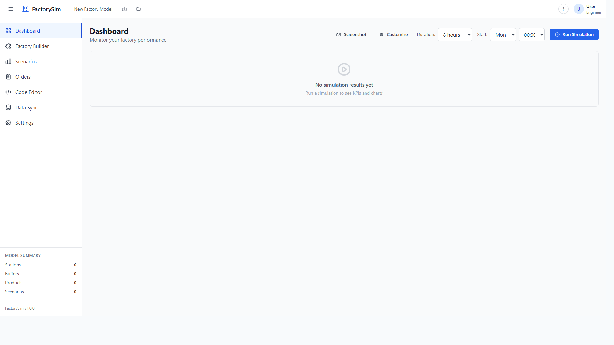

Build a digital twin of your production line in minutes. Run what-if scenarios, spot bottlenecks, and optimize throughput — all without touching the floor.
From drag-and-drop factory building to deep Python scripting, FactorySim scales with your expertise.
Drag-and-drop canvas with 14+ node types. Source, stations, buffers, conveyors, assembly — connect them visually.
Real-time OEE, throughput, cycle time, WIP, and bottleneck scoring. Know exactly where your line chokes.
10 pre-built templates plus a custom builder. "What if a machine fails?" — answer it in seconds, not weeks.
Full Monaco editor for advanced scripting. Write custom KPIs, plugins, and lifecycle hooks with SimPy.
Import from CSV, Excel, REST APIs (MES), MQTT (IoT), or OPC-UA. Keep your twin synchronized.
Sensitivity analysis with tornado, line, and heatmap charts. Find the lever that moves the needle most.
A real desktop application — not a prototype. Ship-ready simulation for manufacturing teams.

Drag stations, buffers, and connections onto the canvas. Configure cycle times, failure rates, batch sizes, and distributions.
Hit run and watch a SimPy discrete-event simulation execute. Test scenarios like machine failures, demand spikes, or shift changes.
Read OEE breakdowns, identify bottlenecks, compare scenarios side-by-side, and export reports. Make decisions backed by data.
Whether you're on the floor or in the office, FactorySim answers the questions that matter.
Can we handle 20% more demand with current equipment? Find out before committing capital.
Stop guessing which station is the constraint. See utilization, WIP buildup, and blocking in one view.
What does 2 hours of unplanned downtime on Line 3 cost? Simulate it before it happens.
Test a new line layout in simulation before pouring concrete. Iterate on station placement and buffer sizing digitally.
Clone, install, and launch. No cloud account, no API key, no configuration files.
# Clone the repository git clone https://github.com/adrisandeoca-coder/FactorySim.git cd FactorySim # Install dependencies npm install cd python && pip install -r requirements.txt && cd .. # Launch the app npm run dev
Requires Node.js 20+ and Python 3.11+. All dependencies are open-source.
Starts Vite + Electron with hot-reload on the React renderer. Python engine boots automatically.
Drag a Source, Station, and Sink onto the canvas. Connect them and hit Run.
Run npm run build && npm run package for Windows, macOS, or Linux installers.
FactorySim is maintained by manufacturing engineers and developers who believe simulation should be accessible, not locked behind enterprise pricing.
Submit bug reports, feature requests, or pull requests. Every contribution matters.
Stars help others discover FactorySim. If it saved you time, show some love.
Getting started guide, architecture overview, plugin development, and API reference.
FactorySim is AGPL-3.0 licensed. Inspect the code, contribute features, or fork it for your team. Commercial licenses available for proprietary use.
Download FactorySim and build your first digital twin in under 10 minutes. Free, forever.
Download for Free